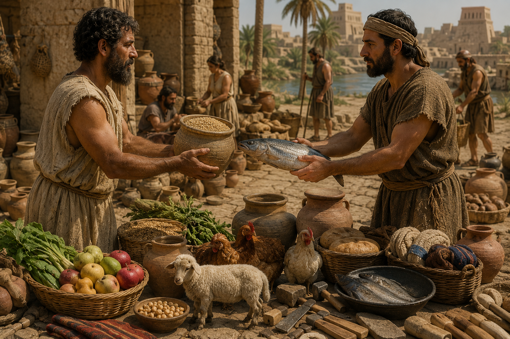

📅 Período aproximado: 9000 a.C. até 1200 a.C. O escambo foi a primeira forma de comércio da humanidade. Antes do dinheiro existir, as pessoas realizavam trocas diretas de produtos e serviços. Um agricultor podia trocar trigo por carne, roupas ou ferramentas. Já pescadores trocavam peixes por frutas, sementes ou objetos de barro. Esse sistema começou nas primeiras civilizações agrícolas da Mesopotâmia, Egito e outras regiões antigas. Apesar de funcionar no início, o escambo possuía vários problemas. As duas pessoas precisavam querer exatamente aquilo que a outra tinha para oferecer. Imagine alguém tentando trocar galinhas por peixe, mas o pescador naquele dia não queria galinhas. Isso dificultava muito o comércio. Mesmo com suas limitações, o escambo foi extremamente importante porque marcou o nascimento da economia e das primeiras relações comerciais entre povos.